Show code block
pacman::p_load(sf, tmap, tidyverse)By the end of this hands-on exercise, I will be able to:
The R packages required for this exercise are: sf, tmap, and tidyverse. The code chunk below uses pacman::p_load() to check, install, and load all the necessary packages.
pacman::p_load(sf, tmap, tidyverse)Two data sets will be used in this exercise:
The code chunk below uses st_read() of the sf package to import the shapefile into R as a simple feature data frame called mpsz.
mpsz <- st_read(dsn = "Hands-on Exercises/Hands-on W9/MP14_SUBZONE_WEB_PL",
layer = "MP14_SUBZONE_WEB_PL")Reading layer `MP14_SUBZONE_WEB_PL' from data source
`/Users/kaylado/Documents/Visual Analytics/ISSS608 - VAA/Hands-on Exercises/Hands-on W9/MP14_SUBZONE_WEB_PL'
using driver `ESRI Shapefile'
Simple feature collection with 323 features and 15 fields
Geometry type: MULTIPOLYGON
Dimension: XY
Bounding box: xmin: 2667.538 ymin: 15748.72 xmax: 56396.44 ymax: 50256.33
Projected CRS: SVY21I can examine the content of mpsz by using the code chunk below.
mpszSimple feature collection with 323 features and 15 fields
Geometry type: MULTIPOLYGON
Dimension: XY
Bounding box: xmin: 2667.538 ymin: 15748.72 xmax: 56396.44 ymax: 50256.33
Projected CRS: SVY21
First 10 features:
OBJECTID SUBZONE_NO SUBZONE_N SUBZONE_C CA_IND PLN_AREA_N
1 1 1 MARINA SOUTH MSSZ01 Y MARINA SOUTH
2 2 1 PEARL'S HILL OTSZ01 Y OUTRAM
3 3 3 BOAT QUAY SRSZ03 Y SINGAPORE RIVER
4 4 8 HENDERSON HILL BMSZ08 N BUKIT MERAH
5 5 3 REDHILL BMSZ03 N BUKIT MERAH
6 6 7 ALEXANDRA HILL BMSZ07 N BUKIT MERAH
7 7 9 BUKIT HO SWEE BMSZ09 N BUKIT MERAH
8 8 2 CLARKE QUAY SRSZ02 Y SINGAPORE RIVER
9 9 13 PASIR PANJANG 1 QTSZ13 N QUEENSTOWN
10 10 7 QUEENSWAY QTSZ07 N QUEENSTOWN
PLN_AREA_C REGION_N REGION_C INC_CRC FMEL_UPD_D X_ADDR
1 MS CENTRAL REGION CR 5ED7EB253F99252E 2014-12-05 31595.84
2 OT CENTRAL REGION CR 8C7149B9EB32EEFC 2014-12-05 28679.06
3 SR CENTRAL REGION CR C35FEFF02B13E0E5 2014-12-05 29654.96
4 BM CENTRAL REGION CR 3775D82C5DDBEFBD 2014-12-05 26782.83
5 BM CENTRAL REGION CR 85D9ABEF0A40678F 2014-12-05 26201.96
6 BM CENTRAL REGION CR 9D286521EF5E3B59 2014-12-05 25358.82
7 BM CENTRAL REGION CR 7839A8577144EFE2 2014-12-05 27680.06
8 SR CENTRAL REGION CR 48661DC0FBA09F7A 2014-12-05 29253.21
9 QT CENTRAL REGION CR 1F721290C421BFAB 2014-12-05 22077.34
10 QT CENTRAL REGION CR 3580D2AFFBEE914C 2014-12-05 24168.31
Y_ADDR SHAPE_Leng SHAPE_Area geometry
1 29220.19 5267.381 1630379.3 MULTIPOLYGON (((31495.56 30...
2 29782.05 3506.107 559816.2 MULTIPOLYGON (((29092.28 30...
3 29974.66 1740.926 160807.5 MULTIPOLYGON (((29932.33 29...
4 29933.77 3313.625 595428.9 MULTIPOLYGON (((27131.28 30...
5 30005.70 2825.594 387429.4 MULTIPOLYGON (((26451.03 30...
6 29991.38 4428.913 1030378.8 MULTIPOLYGON (((25899.7 297...
7 30230.86 3275.312 551732.0 MULTIPOLYGON (((27746.95 30...
8 30222.86 2208.619 290184.7 MULTIPOLYGON (((29351.26 29...
9 29893.78 6571.323 1084792.3 MULTIPOLYGON (((20996.49 30...
10 30104.18 3454.239 631644.3 MULTIPOLYGON (((24472.11 29...The output reveals that there are a total of 323 multipolygon features and 15 fields in the mpsz simple feature data frame. mpsz is in svy21 projected coordinates system with two extent values: xmin, ymin, xmax, ymax.
Notice that only the first ten records will be displayed. Do you know why?
This is because mpsz is also a tibble data frame, and by default, R only prints the first 10 rows of a tibble to keep the console output readable. The same truncation behaviour will be seen whenever a large tibble or sf object is printed without head() or explicit row limits.
Next, I will import respopagesextod2011to2020.csv into RStudio as a tibble data frame called popdata.
popdata <- read_csv("Hands-on Exercises/Hands-on W9/respopagesextod2011to2020.csv")Before a choropleth map can be prepared, a data table with values at the planning subzone level is required. The data table should include the variables PA, SZ, YOUNG, ECONOMY ACTIVE, AGED, TOTAL, and DEPENDENCY.
YOUNG: age group 0 to 4 until age group 20 to 24,ECONOMY ACTIVE: age group 25 to 29 until age group 60 to 64,AGED: age group 65 and above,TOTAL: all age groups, andDEPENDENCY: ratio of (YOUNG + AGED) / ECONOMY ACTIVE.The following data wrangling and transformation functions will be used:
pivot_wider() of the tidyr package, andmutate(), filter(), group_by(), and select() of the dplyr package.popdata2020 <- popdata %>%
filter(Time == 2020) %>%
group_by(PA, SZ, AG) %>%
summarise(`POP` = sum(`Pop`)) %>%
ungroup() %>%
pivot_wider(names_from = AG,
values_from = POP) %>%
mutate(YOUNG = rowSums(.[3:6]) + rowSums(.[12])) %>%
mutate(`ECONOMY ACTIVE` = rowSums(.[7:11]) + rowSums(.[13:15])) %>%
mutate(`AGED` = rowSums(.[16:21])) %>%
mutate(`TOTAL` = rowSums(.[3:21])) %>%
mutate(`DEPENDENCY` = (`YOUNG` + `AGED`) / `ECONOMY ACTIVE`) %>%
select(`PA`, `SZ`, `YOUNG`, `ECONOMY ACTIVE`, `AGED`, `TOTAL`, `DEPENDENCY`)Before performing the georelational join, I need to convert the values of the PA and SZ fields to uppercase so they match the values in the geospatial data.
popdata2020 <- popdata2020 %>%
mutate(across(c(PA, SZ), toupper)) %>%
filter(`ECONOMY ACTIVE` > 0)Next, left_join() is used to merge the geographical data and the attribute table using the planning subzone name as the common identifier.
mpsz_pop2020 <- left_join(mpsz, popdata2020,
by = c("SUBZONE_N" = "SZ"))write_rds(mpsz_pop2020, "Hands-on Exercises/Hands-on W9/mpszpop2020.rds")left_join() of the dplyr package is used with mpsz as the left data table to ensure that all the planning subzones in Singapore are retained.
Two approaches can be used to prepare a choropleth map using tmap:
qtm(), andThe easiest and quickest way to draw a choropleth map using tmap is qtm(). It is concise and provides a good default visualisation in many cases.
tmap_mode("plot")
qtm(mpsz_pop2020, fill = "DEPENDENCY")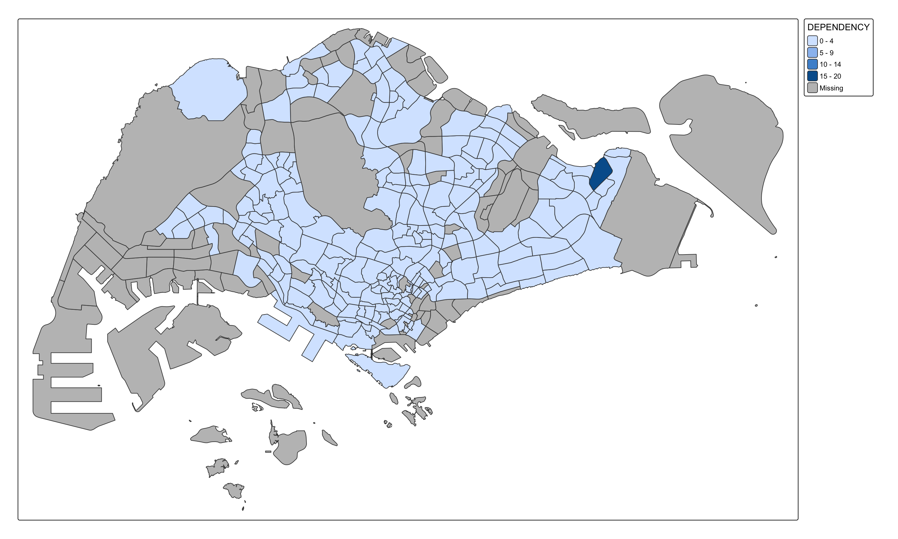
tmap_mode() with the “plot” option is used to produce a static map. For an interactive mode, the “view” option should be used.fill argument is used to map the attribute DEPENDENCY.Despite its usefulness for drawing a choropleth map quickly and easily, the drawback of qtm() is that it makes aesthetic control of individual layers harder. To draw a high-quality cartographic choropleth map, tmap’s drawing elements should be used.
The basic building block of tmap is tm_shape() followed by one or more layer elements such as tm_fill() and tm_polygons().
tm_shape(mpsz_pop2020) +
tm_polygons()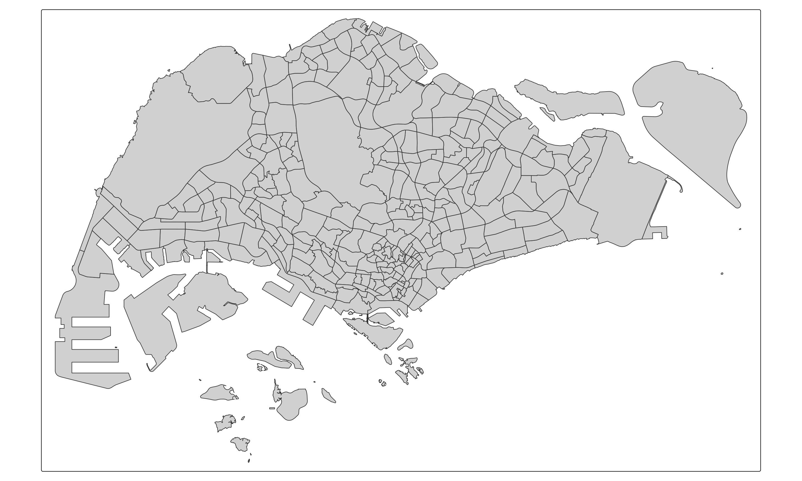
To draw a choropleth map showing the geographical distribution of a selected variable by planning subzone, I just need to assign the target variable such as DEPENDENCY to tm_polygons().
tm_shape(mpsz_pop2020) +
tm_polygons("DEPENDENCY")
YlOrRd of ColorBrewer.tm_polygons() is a wrapper of tm_fill() and tm_borders(). tm_fill() shades the polygons using the default colour scheme, while tm_borders() adds the borders of the shapefile onto the choropleth map.
tm_shape(mpsz_pop2020) +
tm_fill("DEPENDENCY") +
tm_borders(lwd = 0.01, fill_alpha = 0.1)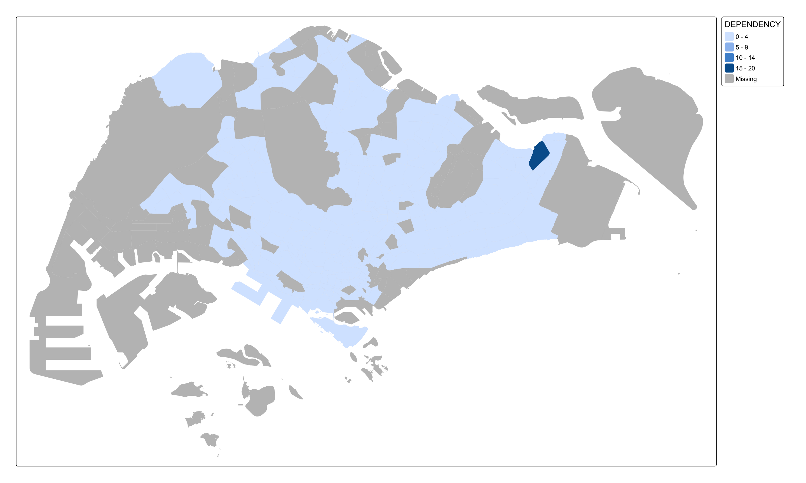
The alpha argument is used to define transparency as a number between 0 (totally transparent) and 1 (not transparent). By default, the alpha value of the colour is used (normally 1).
Most choropleth maps employ some method of data classification. The point of classification is to take a large number of observations and group them into data ranges or classes.
tmap provides ten data classification methods, namely: fixed, sd, equal, pretty (default), quantile, kmeans, hclust, bclust, fisher, and jenks.
The choice of classification method and number of classes can dramatically change the message a choropleth map conveys, even though the underlying data has not changed at all. The same variable can be made to look almost uniform or highly polarised purely by adjusting these two settings. As a map maker, I need to be deliberate and transparent about the classification method and number of classes I choose, since these decisions can unintentionally (or intentionally) mislead readers.
The code chunk below shows a quantile data classification that uses 5 classes.
tm_shape(mpsz_pop2020) +
tm_polygons("DEPENDENCY",
fill.scale = tm_scale_intervals(
style = "quantile",
n = 5)) +
tm_borders(fill_alpha = 0.5)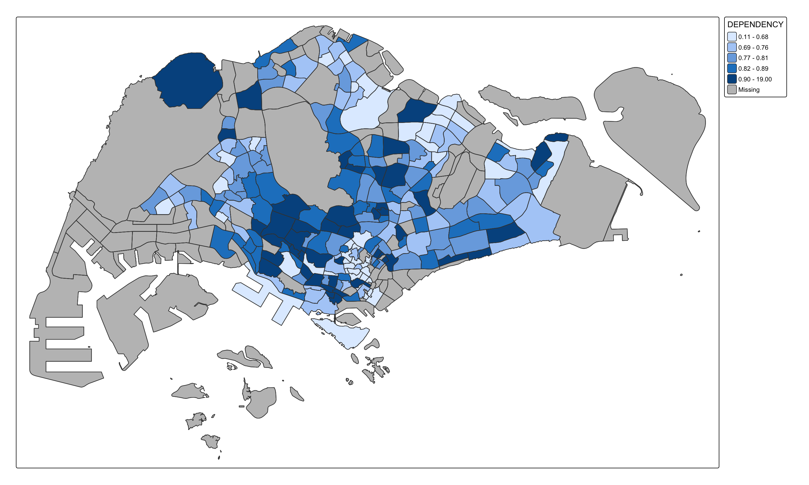
The code chunk below shows an equal data classification that uses 5 classes.
tm_shape(mpsz_pop2020) +
tm_polygons("DEPENDENCY",
fill.scale = tm_scale_intervals(
style = "equal",
n = 5)) +
tm_borders(fill_alpha = 0.5)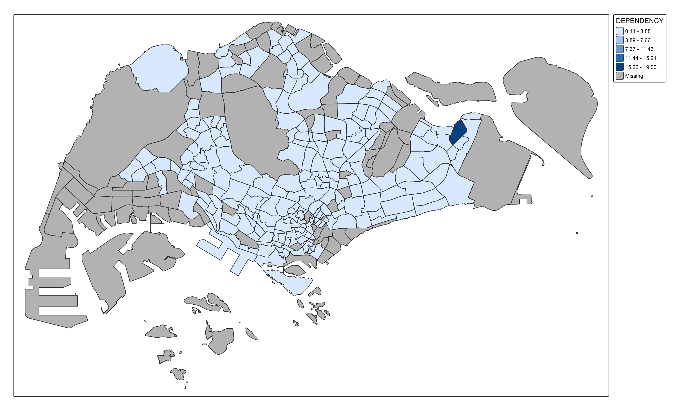
The code chunk below shows a Jenks natural breaks classification that uses 5 classes.
tm_shape(mpsz_pop2020) +
tm_polygons("DEPENDENCY",
fill.scale = tm_scale_intervals(
style = "jenks",
n = 5)) +
tm_borders(fill_alpha = 0.5)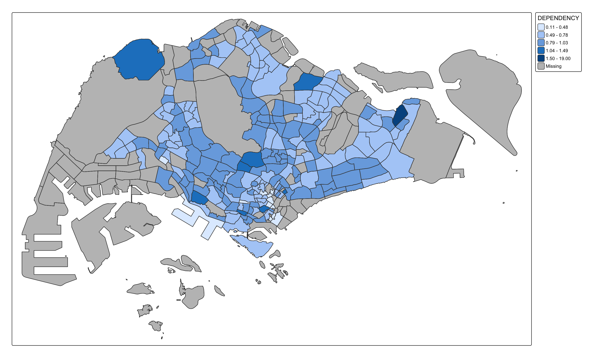
Besides the built-in data classification methods, breakpoints can also be set explicitly by means of the breaks argument. It is good practice to get some descriptive statistics on the variable before setting the breakpoints.
summary(mpsz_pop2020$DEPENDENCY) Min. 1st Qu. Median Mean 3rd Qu. Max. NA's
0.1111 0.7147 0.7867 0.8585 0.8763 19.0000 92 With reference to the summary statistics above, I will set break points at 0.60, 0.70, 0.80, and 0.90. In addition, I need to include a minimum and maximum, which I will set at 0 and 1.00. The breaks vector is thus c(0, 0.60, 0.70, 0.80, 0.90, 1.00).
tm_shape(mpsz_pop2020) +
tm_polygons("DEPENDENCY",
breaks = c(0, 0.60, 0.70, 0.80, 0.90, 1.00)) +
tm_borders(fill_alpha = 0.5)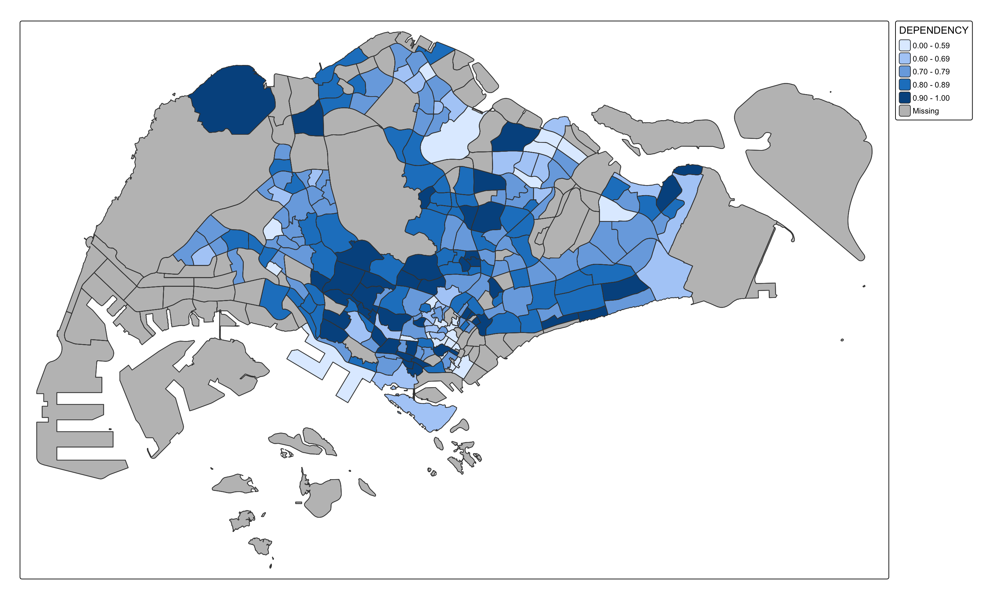
Using what I had learned, prepare choropleth maps by using different classification methods supported by tmap and compare their differences.
To answer this, I will plot maps using five different classification methods—jenks, quantile, equal, sd, and fisher—all keeping n = 5, side by side for comparison.
map_jenks <- tm_shape(mpsz_pop2020) +
tm_polygons("DEPENDENCY",
fill.scale = tm_scale_intervals(style = "jenks", n = 5)) +
tm_borders(fill_alpha = 0.5) +
tm_title("Jenks")
map_quantile <- tm_shape(mpsz_pop2020) +
tm_polygons("DEPENDENCY",
fill.scale = tm_scale_intervals(style = "quantile", n = 5)) +
tm_borders(fill_alpha = 0.5) +
tm_title("Quantile")
map_equal <- tm_shape(mpsz_pop2020) +
tm_polygons("DEPENDENCY",
fill.scale = tm_scale_intervals(style = "equal", n = 5)) +
tm_borders(fill_alpha = 0.5) +
tm_title("Equal")
map_sd <- tm_shape(mpsz_pop2020) +
tm_polygons("DEPENDENCY",
fill.scale = tm_scale_intervals(style = "sd", n = 5)) +
tm_borders(fill_alpha = 0.5) +
tm_title("Standard Deviation")
map_fisher <- tm_shape(mpsz_pop2020) +
tm_polygons("DEPENDENCY",
fill.scale = tm_scale_intervals(style = "fisher", n = 5)) +
tm_borders(fill_alpha = 0.5) +
tm_title("Fisher")
tmap_arrange(map_jenks, map_quantile, map_equal, map_sd, map_fisher, ncol = 3)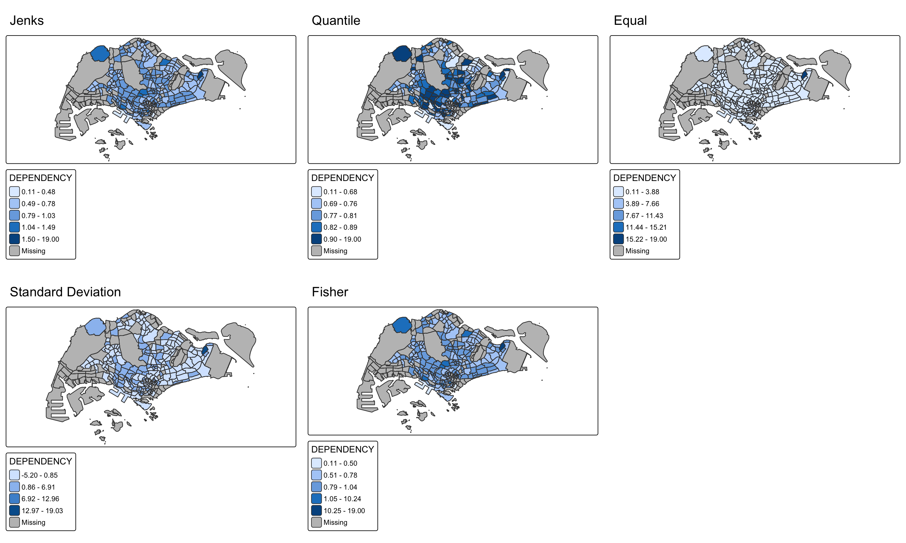
DEPENDENCY is right-skewed, most subzones fall into just one or two of the lower classes, making the map look almost monochrome.Prepare choropleth maps by using a similar classification method but with different numbers of classes (i.e. 2, 6, 10, 20). Compare the output maps. What observation can you draw?
I will hold the classification method constant at “pretty” and vary the number of classes (n) to 2, 6, 10, and 20.
map_n2 <- tm_shape(mpsz_pop2020) +
tm_polygons("DEPENDENCY",
fill.scale = tm_scale_intervals(style = "pretty", n = 2)) +
tm_borders(fill_alpha = 0.5) +
tm_title("n = 2")
map_n6 <- tm_shape(mpsz_pop2020) +
tm_polygons("DEPENDENCY",
fill.scale = tm_scale_intervals(style = "pretty", n = 6)) +
tm_borders(fill_alpha = 0.5) +
tm_title("n = 6")
map_n10 <- tm_shape(mpsz_pop2020) +
tm_polygons("DEPENDENCY",
fill.scale = tm_scale_intervals(style = "pretty", n = 10)) +
tm_borders(fill_alpha = 0.5) +
tm_title("n = 10")
map_n20 <- tm_shape(mpsz_pop2020) +
tm_polygons("DEPENDENCY",
fill.scale = tm_scale_intervals(style = "pretty", n = 20)) +
tm_borders(fill_alpha = 0.5) +
tm_title("n = 20")
tmap_arrange(map_n2, map_n6, map_n10, map_n20, ncol = 2)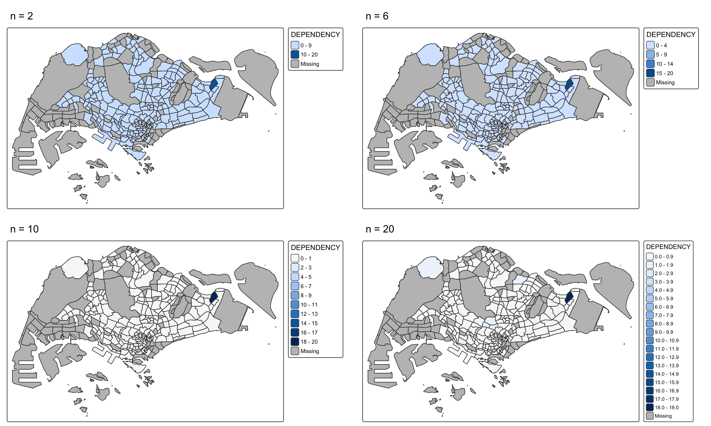
tmap supports colour ramps either defined by the user or a set of predefined colour ramps from the RColorBrewer package.
To change the colour, I assign the preferred colour scheme to the values argument of tm_scale_intervals().
tm_shape(mpsz_pop2020) +
tm_polygons("DEPENDENCY",
fill.scale = tm_scale_intervals(
style = "quantile",
n = 5,
values = "brewer.greens")) +
tm_borders(fill_alpha = 0.5)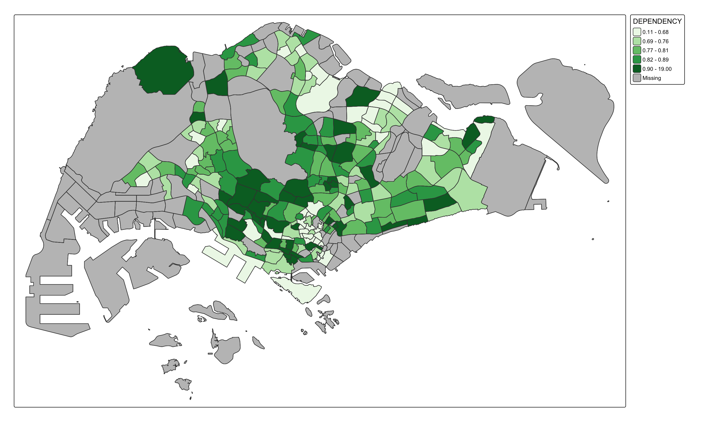
To reverse the colour shading, I add a “-” prefix to the colour scheme name.
tm_shape(mpsz_pop2020) +
tm_polygons("DEPENDENCY",
fill.scale = tm_scale_intervals(
style = "quantile",
n = 5,
values = "-brewer.greens")) +
tm_borders(fill_alpha = 0.5)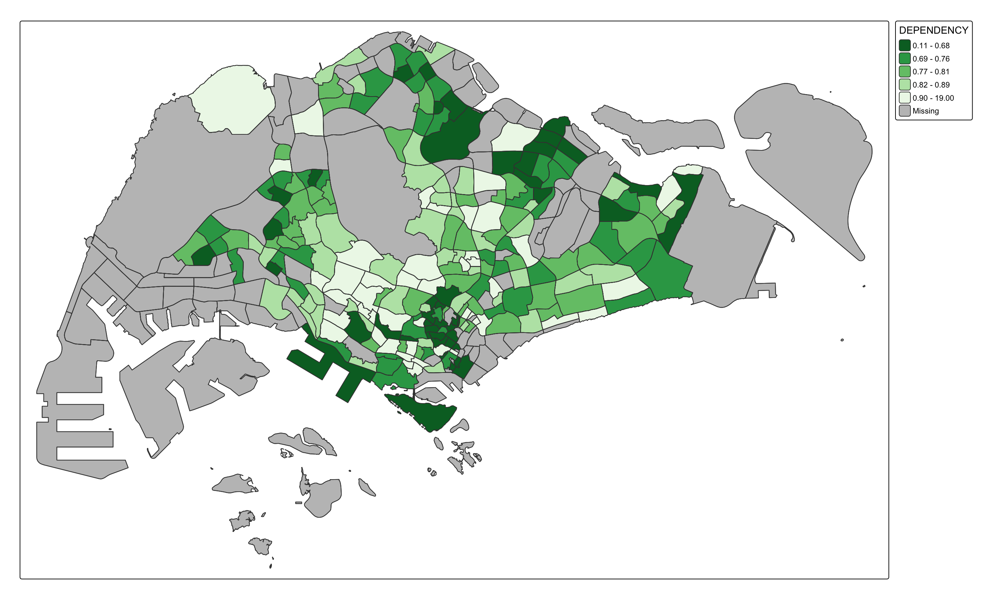
Map layout refers to the combination of all map elements into a cohesive map. Map elements include objects to be mapped, the title, the scale bar, the compass, margins, and aspect ratios.
In tmap, several legend options are provided to change the placement, format, and appearance of the legend.
tm_shape(mpsz_pop2020) +
tm_polygons("DEPENDENCY",
fill.scale = tm_scale_intervals(
style = "jenks",
n = 5,
values = "brewer.greens"),
fill.legend = tm_legend(
title = "Dependency ratio")) +
tm_borders(fill_alpha = 0.5) +
tm_title("Distribution of Dependency Ratio by planning subzone\n(Jenks classification)")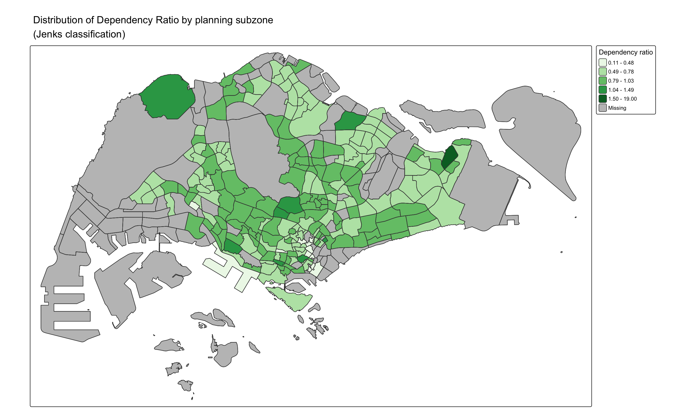
tmap allows a wide variety of layout settings to be changed. They can be called by using tmap_style().
tm_shape(mpsz_pop2020) +
tm_fill("DEPENDENCY",
style = "quantile",
palette = "-Greens") +
tm_borders(alpha = 0.5) +
tmap_style("classic")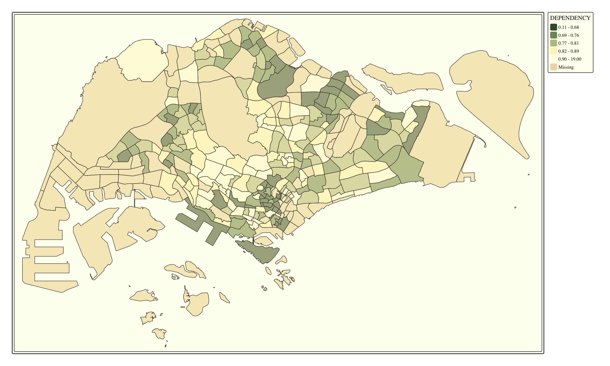
tmap also provides arguments to draw other map furniture such as compass, scale bar, and grid lines.
In the code chunk below, tm_compass(), tm_grid(), and tm_credits() are used to add a compass rose, grid lines, and attribution text onto the choropleth map.
tm_shape(mpsz_pop2020) +
tm_polygons(fill = "DEPENDENCY",
fill.scale = tm_scale_intervals(
style = "quantile",
n = 5,
values = "brewer.blues"),
fill.legend = tm_legend(
title = "Dependency ratio")) +
tm_title("Distribution of Dependency Ratio by planning subzone") +
tm_layout(frame = TRUE) +
tm_borders(fill_alpha = 0.5) +
tm_compass(type = "8star", size = 2) +
tm_grid(alpha = 0.2) +
tm_credits("Source: Planning Sub-zone boundary from Urban Redevelopment Authority (URA)\nand Population data from Department of Statistics DOS",
position = c("left", "bottom"))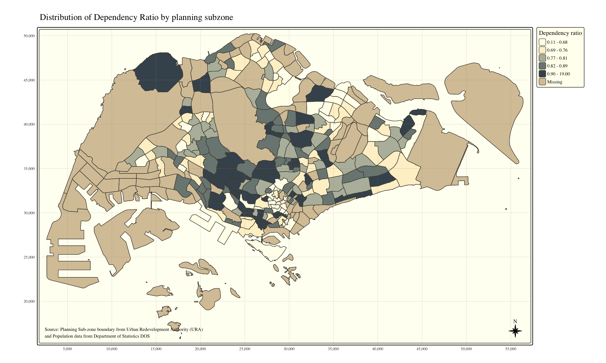
To reset the default style, the code chunk below is used.
tmap_style("white")Small multiple maps, also referred to as facet maps, are composed of many maps arranged side by side, and sometimes stacked vertically. Small multiple maps enable the visualisation of how spatial relationships change with respect to another variable, such as time.
In tmap, small multiple maps can be plotted in three ways:
tm_facets(), andtmap_arrange().In this example, small multiple choropleth maps are created by assigning multiple values to tm_fill().
tm_shape(mpsz_pop2020) +
tm_fill(c("YOUNG", "AGED"),
style = "equal",
palette = "Blues") +
tm_layout(legend.position = c("right", "bottom")) +
tm_borders(alpha = 0.5) +
tmap_style("white")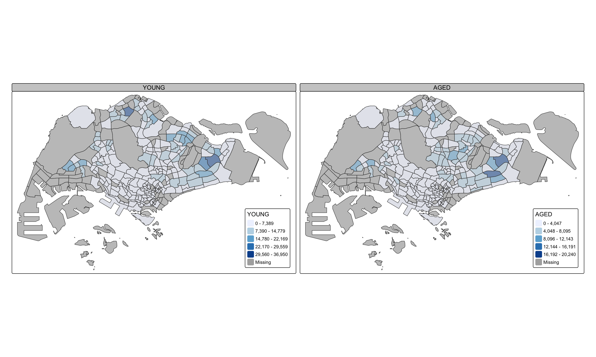
In this example, small multiple choropleth maps are created by assigning multiple values along with different classification methods.
tm_shape(mpsz_pop2020) +
tm_polygons(c("DEPENDENCY", "AGED"),
style = c("equal", "quantile"),
palette = list("Blues", "Greens")) +
tm_layout(legend.position = c("right", "bottom"))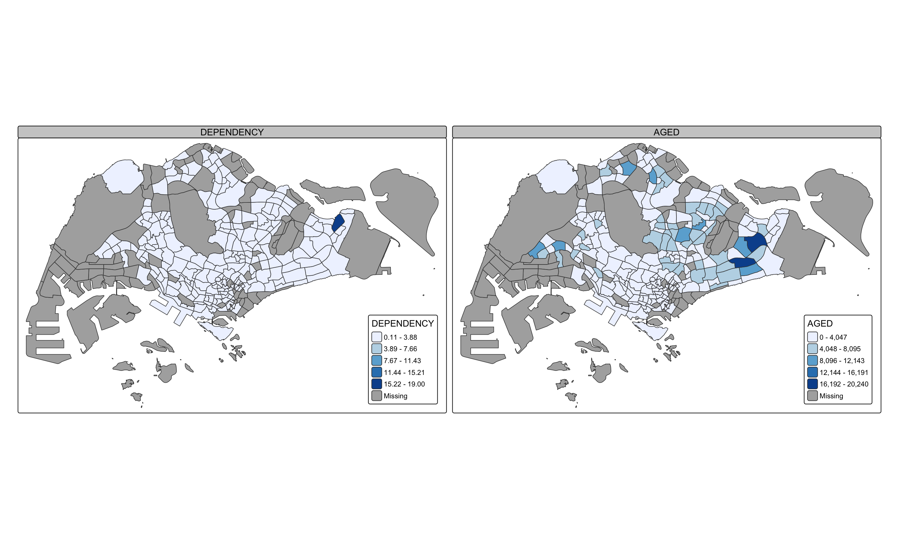
In this example, multiple small maps are created using tm_facets().
tm_shape(mpsz_pop2020) +
tm_fill("DEPENDENCY",
style = "quantile",
palette = "Blues",
thres.poly = 0) +
tm_facets(by = "REGION_N",
free.coords = TRUE) +
tm_layout(legend.show = FALSE,
title.position = c("center", "center"),
title.size = 20) +
tm_borders(alpha = 0.5)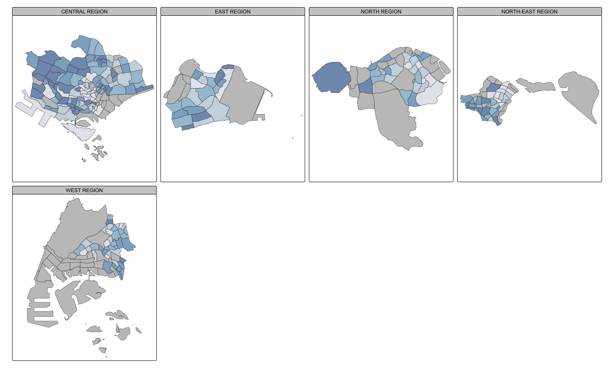
In this example, multiple small choropleth maps are created by using tmap_arrange().
youngmap <- tm_shape(mpsz_pop2020) +
tm_polygons("YOUNG",
style = "quantile",
palette = "Blues")
agedmap <- tm_shape(mpsz_pop2020) +
tm_polygons("AGED",
style = "quantile",
palette = "Blues")
tmap_arrange(youngmap, agedmap, asp = 1, ncol = 2)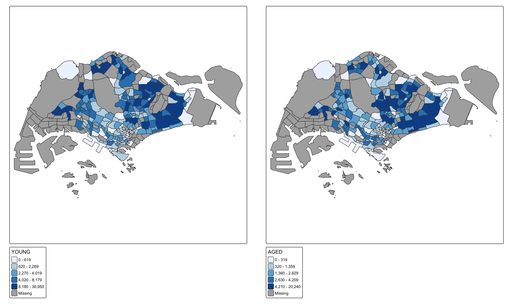
Instead of creating small multiple choropleth maps, the selection function can be used to map spatial objects that meet a specified selection criterion.
tm_shape(mpsz_pop2020[mpsz_pop2020$REGION_N == "CENTRAL REGION", ]) +
tm_fill("DEPENDENCY",
style = "quantile",
palette = "Blues",
legend.hist = TRUE,
legend.is.portrait = TRUE,
legend.hist.z = 0.1) +
tm_layout(legend.outside = TRUE,
legend.height = 0.45,
legend.width = 5.0,
legend.position = c("right", "bottom"),
frame = FALSE) +
tm_borders(alpha = 0.5)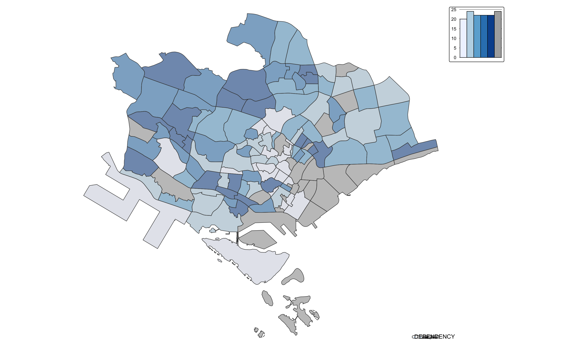